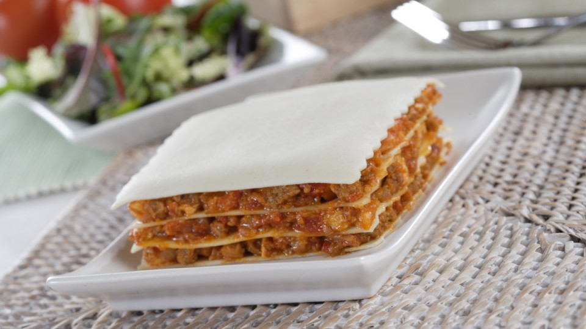

Lasaña de centollo
Asi lo cocinamos
Cocemos la pasta en abundante agua hirviendo con un chorreón de aceite de oliva y sal. Reservamos las placas cocidas y pasadas por agua fría para que no se peguen.
Hacemos un sofrito en una sartén con un poco de aceite de oliva, donde pocharemos la cebolla y los ajos cortados finamente. Añadimos después el pimiento rojo y el verde cortados en daditos y, por último, la carne picada. Incorporamos medio vaso de vino blanco y dejamos freír mientras se evapora el alcohol y se hace la carne. Salpimentamos al gusto.
Montamos la lasaña con una placa de pasta en el fondo y encima un poco del sofrito y repetimos la operación dos veces más para terminar encima con una placa de lasaña. Calentamos el plato en el horno y servimos.
Trucos y consejos
Para hacer otra variedad de esta receta podemos añadir encima de la lasaña una capa de salsa bechamel y queso rallado y gratinar en el horno.
Informacion Nutricinal
La pasta es un alimento rico en hidratos de carbono, a lo que sumamos en esta ocasión las proteínas de la carne de ternera, que nos aporta además vitaminas del grupo B y minerales como el hierro y el zinc.